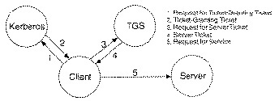
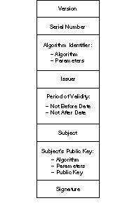
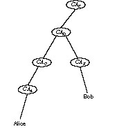
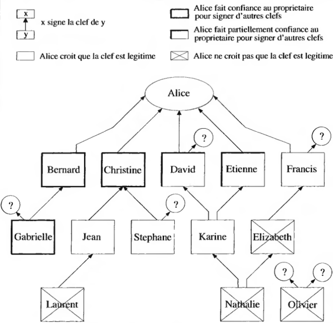

It’s one thing to design protocols and algorithms, but another thing to field them in operational systems. In theory, theory and practice are the same; in practice they are different. Often ideas that look good on paper don’t work in real life. Maybe the bandwidth requirements are too large; maybe the protocol is too slow. Chapter 10 discusses some of the issues related to using cryptography; this chapter gives examples of how it has been done in practice.
In the late 1970s IBM developed a complete key management system for communications and file security on a computer network, using only symmetric cryptography [515,1027]. This protocol is less important in the actual mechanisms and more in its overall philosophy: By automating the generation, distribution, installation, storage, changing, and destruction of keys, the protocol went a long way to ensure the security of the underlying cryptographic algorithms.
This protocol provides three things: secure communications between a server and several terminals, secure file storage at the server, and secure communication among servers. The protocol doesn’t really provide for direct terminal-to-terminal communication, although it can be modified to do that.
Each server on the network is attached to a cryptographic facility, which does all of the encrypting and decrypting. Each server has a Master Key, KM0, and two variants, KM1 and KM2, both of which are simple variants of KM0. These keys are used to encrypt other keys and to generate new keys. Each terminal has a Master Terminal Key, KMT, which is used to exchange keys with other terminals.
The servers store KMT, encrypted with KM1. All other keys, such as those used to encrypt files of keys (called KNF), are stored in encrypted form under KM2. The master key, KM0, is stored in some nonvolatile security module. Today that could be either a ROM key or a magnetic card, or it could be typed in by the user (probably as a text string and then key crunched). KM1 and KM2 are not stored anywhere in the system, but are computed from KM0 whenever they are needed. Session keys, for communication among servers, are generated with a pseudo-random process in the server. Keys to encrypt files for storage (KNF) are generated in the same manner.
The heart of the protocol is a tamper-resistant module, called a cryptographic facility. At both the server and the terminal, all encryption and decryption takes place within this facility. The most important keys, those used to generate the actual encryption keys, are stored in this module. These keys can never be read once they are stored. And they are tagged by use: A key dedicated for one purpose cannot accidentally be used for another. This concept of key control vectors is probably the most significant contribution of this system. Donald Davies and William Price discuss this key management protocol in detail [435].
A variation on this scheme of master and session keys can be found in [1478]. It’s built around network nodes with key notarization facilities that serve local terminals. It is designed to:
For communication and file transfer among users, the scheme uses keys generated in the key notarization facility and sent to the users encrypted under a master key. The identities of the users are incorporated with the key, to provide evidence that the session key has been used between a particular pair of users. This key notarization feature is central to the system. Although the system does not use public-key cryptography, it has a digital-signature-like capability: A key could have only come from a particular source and could only be read at a particular destination.
One of the earliest implementations of public-key cryptography was the experimental system MEMO (MITRE Encrypted Mail Office). MITRE is a DoD contractor, a government think tank, and an all-around bunch of smart guys. MEMO was a secure electronic mail system for users in the MITRENET network, using public-key cryptography for key exchange and DES for file encryption.
In the MEMO system, all public keys are stored in a Public Key Distribution Center, which is a separate node on the network. They are stored in an EPROM to prevent anyone from changing them. Private keys are generated by users or by the system.
For a user to send secure messages, the system first establishes a secure communications path with the Public Key Distribution Center. The user requests a file of all public keys from the Center. If the user passes an identification test using his private key, the Center sends this list to the user’s workstation. The list is encrypted using DES to ensure file integrity.
The implementation uses DES to encrypt messages. The system generates a random DES key for file encryption; the user encrypts the file with the DES key and encrypts the DES key with the recipient’s public key. Both the DES-encrypted file and the public-key-encrypted key are sent to the recipient.
MEMO makes no provision for lost keys. There is some provision for integrity checking of the messages, using checksums. No authentication is built into the system.
The particular public-key implementation used for this system — Diffie-Hellman key exchange over GF(2127) — was proven insecure before the system was implemented (see Section 11.6), although it is easy to modify the system to use larger numbers. MEMO was intended mainly for experimental purposes and was never made operational on the real MITRENET system.
Bell-Northern Research developed a prototype secure Integrated Services Digital Network (ISDN) telephone terminal [499,1192,493,500]. As a telephone, it was never developed beyond prototype. The resulting product was the Packet Data Security Overlay. The terminal uses Diffie-Hellman key exchange, RSA digital signatures, and DES data encryption; it can transmit and receive voice and data at 64 kilobits per second.
A long-term public-key/private-key key pair is embedded in the phone. The private key is stored in a tamper-resistant area of the phone. The public key serves as the identification of the phone. These keys are part of the phone itself and cannot be altered in any way.
Additionally, two other public keys are stored in the phone. One of these keys is the owner’s public key. This key is used to authenticate commands from the owner and can be changed via a command signed by the owner. In this way an owner can transfer ownership of the phone to someone else.
The public key of the network is also stored in the phone. This key is used to authenticate commands from the network’s key management facility and to authenticate calls from other users on the network. This key can also be changed via a signed command from the owner. This permits the owner to move his phone from one network to another.
These keys are considered long-term keys: rarely, if ever, changed. A short-term public-key/private-key key pair is also stored on the phone. These are encapsulated in a certificate signed by the key management facility. When two phones set up a call, they exchange certificates. The public key of the network authenticates these certificates.
This exchange and verification of certificates only sets up a secure call from phone to phone. To set up a secure call from person to person, the protocol has an additional piece. The owner’s private key is stored on a hardware ignition key, which is inserted into the telephone by the owner. This ignition key contains the owner’s private key, encrypted under a secret password known only by the owner (not by the phone, not by the network’s key management facility, not by anybody). It also contains a certificate signed by the network’s key management facility that contains the owner’s public key and some identifying information (name, company, job title, security clearance, favorite pizza toppings, sexual preference, or whatever). This is also encrypted. To decrypt this information and enter it into the phone, the owner types his secret password on the phone’s keypad. After the phone uses this information to set up calls, it is erased after the owner removes his ignition key.
The phone also stores a set of certificates from the network’s key management facility. These certificates authorize particular users to use particular phones.
A call from Alice to Bob works as follows.
Each DES key is unique to each call. It exists only inside the two phones for the duration of the call and is destroyed immediately afterward. If an adversary captures one or both of the phones involved in the call, he will not be able to decrypt any previous call between the two phones.
STU stands for “Secure Telephone Unit, ” an NSA-designed secure phone. The unit is about the size and shape of a conventional telephone, and can be used as such. The phones are also tamper-resistant, enough so that they are unclassified if unkeyed. They also have a data port and can be used to secure modem traffic as well as voice [1133].
Whitfield Diffie described the STU-III in [494]:
To make a call with a STU-III, the caller first places an ordinary
call to another STU-III, then inserts a key-shaped device
containing a cryptographic variable and pushes a “go secure”
button. After an approximately 15-second wait for cryptographic
setup, each phone shows information about the identity and
clearance of the other party on its display and the call can
proceed.
In an unprecedented move, Walter Deeley, NSA’s deputy director
for communications security, announced the STU-III or Future
Secure Voice System in an exclusive interview given to The New York Times [282].
The objective of the new system was primarily
to provide secure voice and low-speed data communications for
the U.S. Defense Department and its contractors. The interview
didn’t say much about how it was going to work, but gradually
the word began to leak out. The new system was using public key.
The new approach to key management was reported early on [68]
and one article spoke of phones being “reprogrammed once a year
by secure telephone link, ” a turn of phrase strongly suggestive of
a certificate passing protocol, similar to that described [in Section 24.3],
that minimizes the need for phones to talk to the key
management center. Recent reports have been more forthcoming,
speaking of a key management system called FIREFLY that
[1341] “evolved from public key technology and is used to
establish pair-wise traffic encryption keys.” Both this description
and testimony submitted to the U.S. Congress by Lee Neuwirth of
Cylink [1164] suggest a combination of key exchange and
certificates similar to that used in the ISDN secure phone and it is
plausible that FIREFLY too is based on exponentiation.
STU-IIIs are manufactured by AT&T and GE. Somewhere between 300,000 and 400,000 have been fielded through 1994. A new version, the Secure Terminal Equipment (STE), will work on ISDN lines.
Kerberos is a trusted third-party authentication protocol designed for TCP/IP networks. A Kerberos service, sitting on the network, acts as a trusted arbitrator. Kerberos provides secure network authentication, allowing a person to access different machines on the network. Kerberos is based on symmetric cryptography (DES as implemented, but other algorithms could be used instead). Kerberos shares a different secret key with every entity on the network and knowledge of that secret key equals proof of identity.
Kerberos was originally developed at MIT for Project Athena. The Kerberos model is based on Needham-Schroeder’s trusted third-party protocol (see Section 3.3) [1159]. The original version of Kerberos, Version 4, is specified in [1094,1499]. (Versions 1 through 3 were internal development versions.) Version 5, modified from Version 4, is specified in [876,877,878]. The best overview of Kerberos is [1163]. Other survey articles are [1384,1493], and two good articles on using Kerberos in the real world are [781,782].
The basic Kerberos protocol was outlined in Section 3.3. In the Kerberos model, there are entities — clients and servers — sitting on the network. Clients can be users, but can also be independent software programs that need to do things: download files, send messages, access databases, access printers, obtain administrative privileges, whatever.
Kerberos keeps a database of clients and their secret keys. For a human user, the secret key is an encrypted password. Network services requiring authentication, as well as clients who wish to use these services, register their secret key with Kerberos.
Because Kerberos knows everyone’s secret key, it can create messages that convince one entity of another entity’s identity. Kerberos also creates session keys which are given to a client and a server (or to two clients) and no one else. A session key is used to encrypt messages between the two parties, after which it is destroyed.
Kerberos uses DES for encryption. Kerberos Version 4 provided a nonstandard mode for authentication. This mode is weak: It fails to detect certain changes to the ciphertext (see Section 9.10). Kerberos Version 5 uses CBC mode.
This section discusses Kerberos Version 5. I will outline the differences between Version 4 and Version 5 further on. The Kerberos protocol is straightforward (see Figure 24.1). A client requests a ticket for a Ticket-Granting Service (TGS) from Kerberos. This ticket is sent to the client, encrypted in the client’s secret key. To use a particular server, the client requests a ticket for that server from the TGS. Assuming everything is in order, the TGS sends the ticket back to the client. The client then presents this ticket to the server along with an authenticator. Again, if there’s nothing wrong with the client’s credentials, the server lets the client have access to the service.

Figure 24.1 Kerberos authentication steps.
Kerberos uses two types of credentials: tickets and authenticators. (The rest of this section uses the notation used in Kerberos documents — see Table 24.1.) A ticket is used to pass securely to the server the identity of the client for whom the ticket was issued. It also contains information that the server can use to ensure that the client using the ticket is the same client to whom the ticket was issued. An authenticator is an additional credential, presented with the ticket.
| c | = client |
| s | = server |
| a | = client’s network address |
| v | = beginning and ending validity time for a ticket |
| t | = timestamp |
| Kx | = x‘s secret key |
| Kx, y | = session key for x and y |
| {m}Kx | = m encrypted in x‘s secret key |
| Tx, y | = x‘s ticket to use y |
| Ax, y | = authenticator from x to y |
A Kerberos ticket takes this form:
Tc, s = s,{c, a, v, Kc, s}Ks
A ticket is good for a single server and a single client. It contains the client’s name and network address, the server’s name, a timestamp, and a session key. This information is encrypted with the server’s secret key. Once the client gets this ticket, she can use it multiple times to access the server — until the ticket expires. The client cannot decrypt the ticket (she does not know the server’s secret key), but she can present it to the server in its encrypted form. No one listening on the network can read or modify the ticket as it passes through the network.
A Kerberos authenticator takes this form:
Ac, s = {c, t, key}Kc, s
The client generates it every time she wishes to use a service on the server. The authenticator contains the client’s name, a timestamp, and an optional additional session key, all encrypted with the session key shared between the client and the server. Unlike a ticket, it can only be used once. However, since the client can generate authenticators as needed (it knows the shared secret key), this is not a problem.
The authenticator serves two purposes. First, it contains some plaintext encrypted in the session key. This proves that it also knows the key. Just as important, the sealed plaintext includes the timestamp. An eavesdropper who records both the ticket and the authenticator can’t replay them two days later.
Kerberos Version 5 has five messages (see Figure 24.1):
These will now be discussed in detail.
The client has one piece of information that proves her identity: her password. Obviously we don’t want her to send this password over the network. The Kerberos protocol minimizes the chance that this password will be compromised, while at the same time not allowing a user to properly authenticate herself unless she knows the password.
The client sends a message containing her name and the name of her TGS server to the Kerberos authentication server. (There can be many TGS servers.) In reality, the user probably just enters her name into the system and the login program sends the request.
The Kerberos authentication server looks up the client in his database. If the client is in the database, Kerberos generates a session key to be used between her and the TGS. This is called a Ticket Granting Ticket (TGT). Kerberos encrypts that session key with the client’s secret key. Then it creates a TGT for the client to authenticate herself to the TGS, and encrypts that in the TGS’s secret key. The authentication server sends both of these encrypted messages back to the client.
The client now decrypts the first message and retrieves the session key. The secret key is a one-way hash of her password, so a legitimate user will have no trouble doing this. If the user were an imposter, he would not know the correct password and therefore could not decrypt the response from the Kerberos authentication server. Access would be denied and he wouldn’t be able to get the ticket or the session key.
The client saves the TGT and session key and erases the password and the one-way hash. This information is erased to reduce the chance of compromise. If an adversary manages to copy the client’s memory, he will only get the TGT and the session key. These are valuable pieces of information, but only during the lifetime of the TGT. After the TGT expires, they will be worthless.
The client can now prove her identity to the TGS for the lifetime of the TGT.
A client has to obtain a separate ticket for each service she wants to use. The TGS grants tickets for individual servers.
When a client needs a ticket that she does not already have, she sends a request to the TGS. (In reality, the program would do this automatically, and it would be invisible to the user.)
The TGS, upon receiving the request, decrypts the TGT with his secret key. Then he uses the session key included in the TGT to decrypt the authenticator. Finally, he compares the information in the authenticator with the information in the ticket, the client’s network address with the address the request was sent from, and the timestamp with the current time. If everything matches, he allows the request to proceed.
Checking timestamps assumes that all machines have synchronized clocks, at least to within several minutes. If the time in the request is too far in the future or the past, the TGS treats the request as an attempt to replay a previous request. The TGS should also keep track of all live authenticators, because past requests can have timestamps that are still valid. Another request with the same ticket and timestamp as one already received can be ignored.
The TGS responds to a valid request by returning a valid ticket for the client to present to the server. The TGS also creates a new session key for the client and the server, encrypted with the session key shared by the client and the TGS. Both of these messages are then sent back to the client. The client decrypts the message and extracts the session key.
Now the client is ready to authenticate herself to the server. She creates a message very similar to the one sent to the TGS (which makes sense, since the TGS is a service).
The client creates an authenticator, consisting of her name and network address, and a timestamp, encrypted with the session key for her and the server that the TGS generated. The request consists of the ticket received from Kerberos (already encrypted with the server’s secret key) and the encrypted authenticator.
The server decrypts and checks the ticket and the authenticator, as discussed previously, and also checks the client’s address and the timestamp. If everything checks out, the server knows that, according to Kerberos, the client is who she says she is.
For applications that require mutual authentication, the server sends the client back a message consisting of the timestamp, encrypted with the session key. This proves that the server knew his secret key and could decrypt the ticket and therefore the authenticator.
The client and the server can encrypt future messages with the shared key, if desired. Since only they share this key, they both can assume that a recent message encrypted in that key originated with the other party.
The previous sections discussed Kerberos Version 5. In the messages and the construction of the tickets and authenticators, Version 4 is slightly different.
In Kerberos Version 4, the five messages looked like:
Messages 1, 3, and 5 are identical. The double encryption of the ticket in steps 2 and 4 has been removed in Version 5. The Version 5 ticket adds the possibility of multiple addresses, and it replaces a “lifetime” field, l, with a beginning and ending time. The Version 5 authenticator adds the option of including an additional key.
Steve Bellovin and Michael Merritt discussed several potential security vulnerabilities of Kerberos [108]. Although this paper was written about the Version 4 protocols, many of their comments also apply to Version 5.
It may be possible to cache and replay old authenticators. Although timestamps are supposed to prevent this, replays can be done during the lifetime of the ticket. Servers are supposed to store all valid tickets to prevent replays, but this is not always possible. And ticket lifetimes can be long; eight hours is typical.
Authenticators rely on the fact that all the clocks in the network are more or less synchronized. If a host can be fooled about the correct time, then an old authenticator can be replayed without any problem. Most network time protocols are insecure, so this can be a serious problem.
Kerberos is also vulnerable to password-guessing attacks. An intruder can collect tickets and then try to decrypt them. Remember that the average user doesn’t usually choose good passwords. If Mallory collects enough tickets, his chances of recovering a password are good.
Perhaps the most serious attack involves malicious software. The Kerberos protocols rely on the fact that the Kerberos software is trustworthy. There’s nothing to stop Mallory from surreptitiously replacing all client Kerberos software with a version that, in addition to completing the Kerberos protocols, records passwords. This is a problem with any cryptographic software package on an insecure computer, but the widespread use of Kerberos in these environments makes it a particularly tempting target.
Enhancements to Kerberos are in the works, including an implementation of public-key cryptography and a smart-card interface for key management.
Kerberos is not in the public domain, but MIT’s code is freely available.
Actually implementing it into a working UNIX environment is another story.
Several companies sell versions of Kerberos, but you can get a good version
free from Cygnus Support, 814 University Ave., Palo Alto, CA, 94301; (415)
322-3811; fax: (415) 322-3270.
KryptoKnight (Kryptonite — get it?) is an authentication and key distribution system designed by IBM. It is a secret-key protocol and uses either DES in CBC mode (see Section 9.3) or a modified version of MD5 (see Section 18.5).
KryptoKnight supports four security services:
From a user’s perspective, KryptoKnight is similar to Kerberos. Some differences are:
KryptoKnight has tickets and authenticators, just like Kerberos. It has TGSs, but KryptoKnight calls them authentication servers. KryptoKnight’s designers spent considerable effort minimizing the number of messages, lengths of messages, and amount of encryption. For further information on KryptoKnight, read [1110,173,174,175].
SESAME stands for Secure European System for Applications in a Multivendor Environment. It’s a European Community security project, 50 percent funded by RACE (see Section 25.7), whose primary objective is producing technology for user authentication with distributed access control. Think of it as kind of a European version of Kerberos. It’s a two-part project: Stage one is a basic prototype of the architecture, and stage two is a set of commercial projects. The three companies with the greatest hand in development are ICL in the United Kingdom, Siemens in Germany, and Bull in France.
SESAME is an authentication and key-exchange system [361,1248,797,1043]. It uses the Needham-Schroeder protocol, with public-key cryptography to communicate between different security domains. The system is seriously flawed in several respects. Instead of using a real encryption algorithm, they use XOR with a 64-bit key size. Even worse, they use XOR in CBC mode, which leaves half the plaintext unencrypted. In their defense, they planned on using DES until the French government complained; they validated the code with DES but then removed it, and expect people to add it back. I am unimpressed nonetheless.
Authentication in SESAME is a function on the first block of a message, not on the entire message. This has the effect of authenticating “Dear Sir” and not the body of a letter. Key generation consists of two calls to the UNIX rand function, which isn’t very random. SESAME uses crc32 and MD5 as one-way hash functions. And of course, SESAME is vulnerable to Kerberos-like password-guessing.
The Common Cryptographic Architecture (CCA) was designed and developed by IBM to provide cryptographic primitives for confidentiality, integrity, key management, and personal identification number (PIN) processing [751,784,1025,1026,940,752]. Keys are managed by control vectors (CVs) (see Section 8.5). Every key has a CV XORed with it and is never separated from the vector unless inside secure hardware. The CV is a data structure providing an intuitive understanding of the privileges associated with a particular key.
The individual bits of the CV are defined to have specific meanings for using and handling each key managed by CCA. The CV is carried with the encrypted key in data structures called key tokens. Internal key tokens are used locally and contain keys encrypted under the local master key (MK). External key tokens are used to export and import encrypted keys between systems. Keys in external key tokens are encrypted under key-encrypting keys (KEK). The KEKs are managed in internal key tokens. Keys are separated according to their permitted uses.
Key length is also specified and enforced using bits in the CV. Single length keys are 56 bits and are used for such functions as privacy and message authentication. Double length keys are 112 bits and are used for key management, PIN functions, and other special uses. Keys can be required to be DOUBLE-ONLY in which both the left and right halves of the key must be different, DOUBLE in which the halves are permitted to be equal by chance, SINGLE-REPLICATED in which the left and right halves are equal, or SINGLE which contains only 56 bits. The CCA functions specify hardware enforcement of certain key types to be used for some operations.
The CV is checked in a secure hardware processor: It must conform to the permitted CCA rules for each CCA function. If the CV successfully passes the test requirements, a variant of the KEK or MK is obtained by the XOR of the KEK or MK with the CV, and the plaintext target key is recovered for use internally with the CCA function. When new keys are generated, the CV specifies the uses of the generated key. Those combinations of key types that could be used in attacking the system are not generated or imported into a CCA-compliant system.
CCA uses a combination of public-key cryptography and secret-key cryptography for key distribution. The KDC shares a secret master key with each user and encrypts session keys using that master key. Master keys are distributed using public-key cryptography.
The system’s designers chose this hybrid approach for two reasons. The first is performance. Public-key cryptography is computationally intensive; if session keys are distributed using public-key cryptography, the system might bog down. The second is backwards compatibility; this system can be overlaid on existing secret-key schemes with minimal disruption.
CCA systems are designed to be interoperable. For systems that are non-CCA compliant, a Control Vector Translate (CVXLT) function permits keys to be passed between the two implementations. Initialization of the CVXLT function requires dual control. Two individuals must set up the required translation tables independently. Such dual control provides a high degree of assurance concerning the integrity and pedigree of any keys introduced into the system.
A key of type DATA is provided for compatibility with other systems. A DATA key is stored with a CV that identifies the key as a DATA key. DATA keys can have broad uses and as such must be regarded with suspicion and used with care. DATA keys may not be used for any key management functions.
The Commercial Data Masking Facility (CDMF) provides an exportable version of CCA. It has a special feature that reduces DES keys to an effective 40 bits for export (see Section 15.5) [785].
Public-key cryptography has been recommended for use with the ISO authentication framework, also known as the X.509 protocols [304]. This framework provides for authentication across networks. Although no particular algorithms are specified for either security or authentication, the specification recommends RSA. There are provisions, however, for multiple algorithms and hash functions. X.509 was initially issued in 1988. After public review and comment, it was revised in 1993 to correct some security problems [1100,750].
The most important part of X.509 is its structure for public-key certificates. Each user has a distinct name. A trusted Certification Authority (CA) assigns a unique name to each user and issues a signed certificate containing the name and the user’s public key. Figure 24.2 shows an X.509 certificate [304].

Figure 24.2 An X.509 certificate.
The version field identifies the certificate format. The serial number is unique within the CA. The next field identifies the algorithm used to sign the certificate, together with any necessary parameters. Issuer is the name of the CA. The period of validity is a pair of dates; the certificate is valid during the time period between the two. Subject is the name of the user. The subject’s public key information includes the algorithm name, any necessary parameters, and the public key. The last field is the CA’s signature.
If Alice wants to communicate with Bob, she first gets his certificate from a database. Then she verifies its authenticity. If both share the same CA, this is easy. Alice simply verifies the CA’s signature on Bob’s certificate.
If they use different CAs, it’s more complicated. Think of a tree structure, with different CAs certifying other CAs and users. On the top is one master CA. Each CA has a certificate signed by the CA above it, and by the CAs below it. Alice uses these certificates to verify Bob’s certificate.
Figure 24.3 illustrates this. Alice’s certificate is certified by CAA ; Bob’s is certified by CAB. Alice knows CAA’s public key. CAC has a certificate signed by CAA, so Alice can verify that. CAD has a certificate signed by CAC. CAB has a certificate signed by CAD. And Bob’s certificate is signed by CAB. By moving up the certification tree to a common point, in this case CAD, and then down to Bob, Alice can verify Bob’s certificate.

Figure 24.3 Sample certification hierarchy.
Certificates can be stored on databases around the network. Users can send them to each other. When a certificate expires, it should be removed from any public directories. The issuing CA, however, should maintain a copy of the certificate. Should a dispute arise later, it will be required.
Certificates can also be revoked, either because the user’s key has been compromised, the CA’s key has been compromised, or because the CA no longer wants to certify the user. Each CA must maintain a list of all revoked but not expired certificates. When Alice receives a new certificate, she should check to see if it has been revoked. She can check a database of revoked keys on the network, but more likely she will check a locally cached list of revoked certificates. There are certainly possible abuses to this system; key revocation is probably its weakest part.
Alice wants to communicate with Bob. First she goes to a database and obtains what is called a certification path from Alice to Bob, and Bob’s public key. At this point Alice can initiate either a one-way, two-way, or three-way authentication protocol.
The one-way protocol is a single communication from Alice to Bob. It establishes the identities of both Alice and Bob and the integrity of any information communicated by Alice to Bob. It also prevents any replay attacks on the communication.
The two-way protocol adds a reply from Bob. It establishes that Bob, and not an imposter, sent the reply. It also establishes the secrecy of both communications and prevents replay attacks.
Both the one-way and two-way protocols use timestamps. A three-way protocol adds another message from Alice to Bob and obviates the need for timestamps (and therefore authenticated time).
The one-way protocol is:
The two-way protocol consists of the one-way protocol and then a similar one-way protocol from Bob to Alice. After executing steps (1) through (8) of the one-way protocol, the two-way protocol continues with:
The three-way protocol accomplishes the same thing as the two-way protocol, but without timestamps. Steps (1) through (15) are identical to the two-way protocol, with TA = TB = 0.
PEM is the Internet Privacy-Enhanced Mail standard, adopted by the Internet Architecture Board (IAB) to provide secure electronic mail over the Internet. It was initially designed by the Internet Research Task Force (IRTF) Privacy and Security Research Group (PSRG), and then handed over to the Internet Engineering Task Force (IETF) PEM Working Group. The PEM protocols provide for encryption, authentication, message integrity, and key management.
The complete PEM protocols were initially detailed in a series of RFCs (Requests for Comment) in [977] and then revised in [978]. The third iteration of the protocols [979,827,980] is summarized in [177,178]. The protocols were modified and improved, and the final protocols are detailed in another series of RFCs [981,825,76,802]. Another paper by Matthew Bishop [179] details the changes. Reports of attempts to implement PEM include [602,1505,1522,74,351,1366,1367]. See also [1394].
PEM is an inclusive standard. The PEM procedures and protocols are intended to be compatible with a wide range of key-management approaches, including both symmetric and public-key schemes to encrypt data-encrypting keys. Symmetric cryptography is used for message-text encryption. Cryptographic hash algorithms are used for message integrity. Other documents support key-management mechanisms using public-key certificates; algorithms, modes, and associated identifiers; and paper and electronic format details and procedures for the key-management infrastructure to support these services.
PEM supports only certain algorithms, but allows for different suites of algorithms to be specified later. Messages are encrypted with DES in CBC mode. Authentication, provided by something called a Message Integrity Check (MIC), uses either MD2 or MD5. Symmetric key management can use either DES in ECB mode or triple-DES using two keys (called EDE mode). PEM also supports public-key certificates for key management, using the RSA algorithm (key length up to 1024 bits) and the X.509 standard for certificate structure.
PEM provides three privacy-enhancement services: confidentiality, authentication, and message integrity. No special processing requirements are imposed on the electronic mail system. PEM can be incorporated selectively, by site or by user, without affecting the rest of the network.
The specifications for PEM come from four documents:
PEM is compatible with the authentication framework described in [304]; see also [826]. PEM is a superset of X.509; it establishes procedures and conventions for a key-management infrastructure for use with PEM and with other protocols (from both the TCP/IP and OSI suites) in the future.
The key-management infrastructure establishes a single root for all Internet certification. The Internet Policy Registration Authority (IPRA) establishes global policies that apply to all certification under this hierarchy. Beneath the IPRA root are Policy Certification Authorities (PCAs), each of which establishes and publishes its policies for registering users or organizations. Each PCA is certified by the IPRA. Below PCAs, CAs certify users and subordinate organizational entities (such as departments, offices, subsidiaries). Initially, the majority of users are expected to be registered with some organization.
Some PCAs are expected to provide certification for users who wish to register independent of any organization. For users who wish anonymity while taking advantage of PEM privacy facilities, one or more PCAs are expected to be established with policies that allow for registration of users who do not wish to disclose their identities.
PEM’s heart is its message format. Figure 24.4 shows an encrypted message using symmetric key management, Figure 24.5 shows an authenticated and encrypted message using public-key key management, and Figure 24.6 shows an authenticated (but unencrypted) message using public-key key management.
-----BEGIN PRIVACY-ENHANCED MESSAGE----- Proc-Type: 4,ENCRYPTED Content-Domain: RFC822 DEK-Info: DES-CBC,F8143EDE5960C597 Originator-ID-Symmetric: schneier@counterpane.com,, Recipient-ID-Symmetric: schneier@chinet.com,ptf-kmc,3 Key-Info: DES-ECB,RSA-MD2,9FD3AAD2F2691B9A,B70665BB9BF7CBCDA60195DB94F727D3 Recipient-ID-Symmetric: pem-dev@tis.com,ptf-kmc,4 Key-Info: DES-ECB,RSA-MD2,161A3F75DC82EF26,E2EF532C65CBCFF79F83A2658132DB47 LLrHB0eJzyhP+/fSStdW8okeEnv47jxe7SJ/iN72ohNcUk2jHEUSoH1nvNSIWL9M 8tEjmF/zxB+bATMtPjCUWbz8Lr9wloXIkjHUlBLpvXR0UrUzYbkNpk0agV2IzUpk J6UiRRGcDSvzrsoK+oNvqu6z7Xs5Xfz5rDqUcMlK1Z6720dcBWGGsDLpTpSCnpot dXd/H5LMDWnonNvPCwQUHt== -----END PRIVACY-ENHANCED MESSAGE-----
Figure 24.4 Example of an encapsulated message (symmetric case).
-----BEGIN PRIVACY-ENHANCED MESSAGE----- Proc-Type: 4,ENCRYPTED Content-Domain: RFC822 DEK-Info: DES-CBC,BFF968AA74691AC1 Originator-Certificate: MIIBlTCCAScCAWUwDQYJKoZIhvcNAQECBQAwUTELMAkGA1UEBhMCVVMxIDAeBgNV BAoTF1JTQSBEYXRhIFNlY3VyaXR5LCBJbmMuMQ8wDQYDVQQLEwZCZXRhIDExDzAN BgNVBAsTBk5PVEFSWTAeFw05MTA5MDQxODM4MTdaFw05MzA5MDMxODM4MTZaMEUx CzAJBgNVBAYTAlVTMSAwHgYDVQQKExdSU0EgRGF0YSBTZWN1cml0eSwgSW5jLjEU MBIGA1UEAxMLVGVzdCBVc2VyIDEwWTAKBgRVCAEBAgICAANLADBIAkEAwHZHl7i+ yJcqDtjJCowzTdBJrdAiLAnSC+CnnjOJELyuQiBgkGrgIh3j8/x0fM+YrsyF1u3F LZPVtzlndhYFJQIDAQABMA0GCSqGSIb3DQEBAgUAA1kACKr0PqphJYw1j+YPtcIq iWlFPuN5jJ79Khfg7ASFxskYkEMjRNZV/HZDZQEhtVaU7Jxfzs2wfX5byMp2X3U/ 5XUXGx7qusDgHQGs7Jk9W8CW1fuSWUgN4w== Key-Info: RSA, I3rRIGXUGWAF8js5wCzRTkdhO34PTHdRZY9Tuvm03M+NM7fx6qc5udixps2Lng0+ wGrtiUm/ovtKdinz6ZQ/aQ== Issuer-Certificate: MIIB3DCCAUgCAQowDQYJKoZIhvcNAQECBQAwTzELMAkGA1UEBhMCVVMxIDAeBgNV BAoTF1JTQSBEYXRhIFNlY3VyaXR5LCBJbmMuMQ8wDQYDVQQLEwZCZXRhIDExDTAL BgNVBAsTBFRMQ0EwHhcNOTEwOTAxMDgwMDAwWhcNOTIwOTAxMDc1OTU5WjBRMQsw CQYDVQQGEwJVUzEgMB4GA1UEChMXUlNBIERhdGEgU2VjdXJpdHksIEluYy4xDzAN BgNVBAsTBkJldGEgMTEPMA0GA1UECxMGTk9UQVJZMHAwCgYEVQgBAQICArwDYgAw XwJYCsnp6lQCxYykNlODwutF/jMJ3kL+3PjYyHOwk+/9rLg6X65B/LD4bJHtO5XW cqAz/7R7XhjYCm0PcqbdzoACZtIlETrKrcJiDYoP+DkZ8k1gCk7hQHpbIwIDAQAB MA0GCSqGSIb3DQEBAgUAA38AAICPv4f9Gx/tY4+p+4DB7MV+tKZnvBoy8zgoMGOx dD2jMZ/3HsyWKWgSF0eH/AJB3qr9zosG47pyMnTf3aSy2nBO7CMxpUWRBcXUpE+x EREZd9++32ofGBIXaialnOgVUn0OzSYgugiQ077nJLDUj0hQehCizEs5wUJ35a5h MIC-Info: RSA-MD5,RSA, UdFJR8u/TIGhfH65ieewe21OW4tooa3vZCvVNGBZirf/7nrgzWDABz8w9NsXSexv AjRFbHoNPzBuxwmOAFeA0HJszL4yBvhG Recipient-ID-Asymmetric: MFExCzAJBgNVBAYTAlVTMSAwHgYDVQQKExdSU0EgRGF0YSBTZWN1cml0eSwgSW5j LjEPMA0GA1UECxMGQmV0YSAxMQ8wDQYDVQQLEwZOT1RBUlk=, 66 Key-Info: RSA, O6BS1ww9CTyHPtS3bMLD+L0hejdvX6Qv1HK2ds2sQPEaXhX8EhvVphHYTjwekdWv 7x0Z3Jx2vTAhOYHMcqqCjA== qeWlj/YJ2Uf5ng9yznPbtD0mYloSwIuV9FRYx+gzY+8iXd/NQrXHfi6/MhPfPF3d jIqCJAxvld2xgqQimUzoS1a4r7kQQ5c/Iua4LqKeq3ciFzEv/MbZhA== -----END PRIVACY-ENHANCED MESSAGE-----
Figure 24.5 Example of an encapsulated encrypted message (asymmetric case).
-----BEGIN PRIVACY-ENHANCED MESSAGE----- Proc-Type: 4,MIC-ONLY Content-Domain: RFC822 Originator-Certificate: MIIBlTCCAScCAWUwDQYJKoZIhvcNAQECBQAwUTELMAkGA1UEBhMCVVMxIDAeBgNV BAoTF1JTQSBEYXRhIFNlY3VyaXR5LCBJbmMuMQ8wDQYDVQQLEwZCZXRhIDExDzAN BgNVBAsTBk5PVEFSWTAeFw05MTA5MDQxODM4MTdaFw05MzA5MDMxODM4MTZaMEUx CzAJBgNVBAYTAlVTMSAwHgYDVQQKExdSU0EgRGF0YSBTZWN1cml0eSwgSW5jLjEU MBIGA1UEAxMLVGVzdCBVc2VyIDEwWTAKBgRVCAEBAgICAANLADBIAkEAwHZHl7i+ yJcqDtjJCowzTdBJrdAiLAnSC+CnnjOJELyuQiBgkGrgIh3j8/x0fM+YrsyF1u3F LZPVtzlndhYFJQIDAQABMA0GCSqGSIb3DQEBAgUAA1kACKr0PqphJYw1j+YPtcIq iWlFPuN5jJ79Khfg7ASFxskYkEMjRNZV/HZDZQEhtVaU7Jxfzs2wfX5byMp2X3U/ 5XUXGx7qusDgHQGs7Jk9W8CW1fuSWUgN4w== Issuer-Certificate: MIIB3DCCAUgCAQowDQYJKoZIhvcNAQECBQAwTzELMAkGA1UEBhMCVVMxIDAeBgNV BAoTF1JTQSBEYXRhIFNlY3VyaXR5LCBJbmMuMQ8wDQYDVQQLEwZCZXRhIDExDTAL BgNVBAsTBFRMQ0EwHhcNOTEwOTAxMDgwMDAwWhcNOTIwOTAxMDc1OTU5WjBRMQsw CQYDVQQGEwJVUzEgMB4GA1UEChMXUlNBIERhdGEgU2VjdXJpdHksIEluYy4xDzAN BgNVBAsTBkJldGEgMTEPMA0GA1UECxMGTk9UQVJZMHAwCgYEVQgBAQICArwDYgAw XwJYCsnp6lQCxYykNlODwutF/jMJ3kL+3PjYyHOwk+/9rLg6X65B/LD4bJHtO5XW cqAz/7R7XhjYCm0PcqbdzoACZtIlETrKrcJiDYoP+DkZ8k1gCk7hQHpbIwIDAQAB MA0GCSqGSIb3DQEBAgUAA38AAICPv4f9Gx/tY4+p+4DB7MV+tKZnvBoy8zgoMGOx dD2jMZ/3HsyWKWgSF0eH/AJB3qr9zosG47pyMnTf3aSy2nBO7CMxpUWRBcXUpE+x EREZd9++32ofGBIXaialnOgVUn0OzSYgugiQ077nJLDUj0hQehCizEs5wUJ35a5h MIC-Info: RSA-MD5,RSA, jV2OfH+nnXHU8bnL8kPAad/mSQlTDZlbVuxvZAOVRZ5q5+Ejl5bQvqNeqOUNQjr6 EtE7K2QDeVMCyXsdJlA8fA== LSBBIG1lc3NhZ2UgZm9yIHVzZSBpbiB0ZXN0aW5nLg0KLSBGb2xsb3dpbmcgaXMg YSBibGFuayBsaW5lOg0KDQpUaGlzIGlzIHRoZSBlbmQuDQo= -----END PRIVACY-ENHANCED MESSAGE-----
Figure 24.6 Example of an encapsulated MIC-ONLY message (asymmetric case).
The first field is “Proc-Type, ” and identifies the type of processing performed on the message.
There are three possible types of messages. The “ENCRYPTED” specifier says that the message is encrypted and signed. The “MIC-ONLY” and “MIC-CLEAR” specifiers would indicate that the message is signed, but not encrypted. MIC-CLEAR messages are not encoded and can be read using non-PEM software. MIC-ONLY messages need PEM software to transform them to a
human-readable form. A PEM message is always signed; it is optionally encrypted.
The next field, “Content-Domain, ” specifies the type of mail message. It has nothing to do with security. The “DEK-Info” field gives information on the Data Exchange Key (DEK), the encryption algorithm used to encrypt the text, and any parameters associated with the encryption algorithm. Only DES in CBC mode is currently specified, or “DES-CBC.” The second subfield specifies the IV. Other algorithms may be specified by PEM in the future; their use will be noted in DEK-Info and in other fields that identify algorithms.
For messages with symmetric key management (see Figure 24.4), the next field is
“Originator-ID-Symmetric” with three subfields. The first subfield identifies the sender by a unique electronic mail address. The second subfield is optional and identifies the authority that issued the interchange key. The third is an optional Version/Expiration subfield.
Continuing with the symmetric key-management case, each recipient has two fields:
“Recipient-ID-Symmetric” and “Key-Info.” The “Recipient-ID-Symmetric” field has three
subfields; these identify the receiver in the same way that “Originator-ID-Symmetric” identified the sender.
The “Key-Info” field specifies the key-management parameters. This field has four subfields. The first subfield gives the algorithm used to encrypt the DEK. Since the key management in this message is symmetric, the sender and receiver have to share a common key. This is called the Interchange Key (IK), which is used to encrypt the DEK. The DEK can be either encrypted using DES in ECB (denoted by “DES-ECB”) or triple-DES (which would be denoted “DES-EDE”). The second subfield specifies the MIC algorithm. It can be either MD2 (denoted by “RSA-MD2”) or MD5 (which would be denoted “RSA-MD5”). The third subfield, the DEK, and the fourth field, the MIC, are both encrypted with the IK.
Figures 24.5 and 24.6 show messages with public-key key management (called “asymmetric” in PEM nomenclature). The headers are different. In ENCRYPTED messages, after the “DEK-Info”
field comes the “Originator-Certificate” field. The certificate follows the X.509 standard (see Section 24.9). The next field is “Key-Info” with two subfields. The first subfield specifies the public-key algorithm used to encrypt the DEK; currently only RSA is supported. The next subfield is the DEK, encrypted in the originator’s public key. This is an optional field, intended to permit the originator to decrypt his own message in the event that it is returned by the mail system. The next field “Issuer-Certificate, ” is the certificate of whomever signed the Originator-Certificate.
Continuing with the asymmetric key-management case, the next field is “MIC-Info.” The first subfield gives the algorithm under which the MIC was computed. The second subfield shows the algorithm under which the MIC was signed. The third subfield consists of the MIC, signed by the sender’s private key.
Still continuing with asymmetric key management, the next fields deal with the recipients. There are two fields for each recipient: “Recipient-ID-Asymmetric” and “Key-Info.” The
“Recipient-ID-Asymmetric” field has two subfields. The first identifies the authority that issued the receiver’s public key; the second is an optional Version/Expiration subfield. The “Key-Info”
field specifies the key management parameters: The first subfield identifies the algorithm used to encrypt the message and the second subfield is the DEK encrypted with the receiver’s public key.
RSA keys in PEM can range from 508 bits to 1024 bits. This should be long enough for anyone’s security needs. A more likely attack would be against the key-management protocols. Mallory could steal your private key — don’t write it down anywhere — or attempt to fool you into accepting a bogus public key. The key certification provisions of PEM make this unlikely if everyone follows proper procedures, but people have been known to be sloppy.
A more insidious attack would be for Mallory to modify the PEM implementation running on your system. This modified implementation could surreptitiously send Mallory all of your mail, encrypted with his public key. It could even send him a copy of your private key. If the modified implementation works well, you will never know what is happening.
There’s no real way to prevent this kind of attack. You could use a one-way hash function and fingerprint the PEM code. Then, each time you run it, you could check the fingerprint for modification. But Mallory could modify the fingerprint code at the same time he modifies the PEM code. You could fingerprint the fingerprint code, but Mallory could modify that as well. If Mallory can get access to your machine, he can subvert the security of PEM.
The moral is that you can never really trust a piece of software if you cannot trust the hardware it is running on. For most people, this kind of paranoia is unwarranted. For some, it is very real.
Trusted Information Systems, partially supported by the U.S. government Advanced Research Projects Agency, has designed and implemented a reference implementation of PEM (TIS/PEM). Developed for UNIX-based platforms, it has also been ported to VMS, DOS, and Windows.
Although the PEM specifications indicate a single certification hierarchy for use by the Internet, TIS/PEM supports the existence of multiple certification hierarchies. Sites may specify a set of certificates that are to be considered valid, including all certificates issued by them. A site need not join the Internet hierarchy in order to use TIS/PEM.
TIS/PEM is currently available to all U.S. and Canadian organizations and citizens upon request.
It will be distributed in source code form. Interested parties should contact: Privacy-Enhanced Mail, Trusted Information Systems, Inc., 3060 Washington Road (Rte. 97), Glenwood, MD
21738; (301) 854-6889; fax: (301) 854-5363; Internet: pem-info@tis.com.
RIPEM is a program, written by Mark Riordan, that implements the PEM protocols. Although technically not public domain, the program is publicly available and can be used royalty-free for personal, noncommercial applications. A license for its use is included with the documentation.
The code cannot be exported. Of course, U.S. government laws don’t apply outside the United States, and some people have ignored the export rules. RIPEM code is available on bulletin boards worldwide. Something called RIPEM/SIG, which only does digital signatures, is exportable.
At this writing, RIPEM is not a complete implementation of the PEM protocols; it does not implement certificates for authenticating keys.
Before writing RIPEM, Riordan wrote a similar program called RPEM. This was intended to be a public-domain electronic-mail encryption program. To try to avoid patent issues, Riordan used Rabin’s algorithm (see Section 19.5). Public Key Partners claimed that their patents were broad enough to cover all of public-key cryptography and threatened to sue; Riordan stopped distributing the program.
RPEM isn’t really used anymore. It is not compatible with RIPEM. Since RIPEM can be used with the full blessing of Public Key Partners, there is no reason to use RPEM instead.
The Message Security Protocol (MSP) is the military equivalent of PEM. It was developed by the NSA in the late 1980s under the Secure Data Network System (SDNS) program. It is an X.400-compatible application-level protocol for securing electronic mail. MSP will be used for signing and encrypting messages in the Department of Defense’s planned Defense Message System (DMS) network.
The Preliminary Message Security Protocol (PMSP), to be used for “unclassified but sensitive” messages, is a version of MSP adapted for use with both X.400 and TCP/IP. This protocol is also called Mosaic.
Like PEM, MSP and PMSP software applications are flexible and designed to accommodate a variety of algorithms for security functions including signing, hashing, and encryption. PSMP will work with the Capstone chip (see Section 24.17).
Pretty Good Privacy (PGP) is a freeware electronic-mail security program, originally designed by Philip Zimmermann [1652]. It uses IDEA for data encryption, RSA (with keys up to 2047 bits) for key management and digital signatures, and MD5 as a one-way hash function.
PGP’s random public keys use a probabilistic primality tester, and get their initial seeds from measuring the user’s keyboard latency while typing. PGP generates random IDEA keys using the method delineated in ANSI X9.17, Appendix C (see Section 8.1) [55], with IDEA as the symmetric algorithm instead of DES. PGP also encrypts the user’s private key using a hashed pass phrase instead of a password.
PGP-encrypted messages have layered security. The only thing a cryptanalyst can learn about an encrypted message is who the recipient is, assuming he knows the recipient’s key ID. Only after the recipient decrypts the message does he learn who signed the message, if it is signed. Contrast this approach with PEM, which leaves quite a bit of information about the sender, recipient, and message in the unencrypted header.
The most interesting aspect of PGP is its distributed approach to key management (see Section 8.12). There are no key certification authorities; PGP instead supports a “web of trust.” Every user generates and distributes his own public key. Users sign each other’s public keys, creating an interconnected community of PGP users.
For example, Alice might physically give her public key to Bob. Bob knows Alice, so he signs her public key. He then gives the signed key back to her and keeps a copy for himself. When Alice wants to communicate with Carol, Alice sends Carol a copy of the key Bob signed. Carol, who already has Bob’s public key (she got it at some other time) and trusts Bob to certify other people’s keys, verifies his signature on Alice’s key and accepts it as valid. Bob has introduced Alice to Carol.
PGP does not specify a policy for establishing trust; users are free to decide who they trust and who they do not. PGP provides mechanisms for associating trust with public keys and for using trust. Each user keeps a collection of signed public keys in a file called a public-key ring. Each key in the ring has a key legitimacy field that indicates the degree to which the particular user trusts the validity of the key. The higher the trust level, the more the user believes the key is legitimate. A signature trust field measures how far the user trusts the signer to certify the public keys of other users. And finally, an owner trust field indicates the degree to which the particular user trusts the key’s owner to sign other public keys; this field is set manually by the user. PGP continuously updates these fields as users supply new information.
Figure 24.7 shows how this model might look for a particular user, Alice. Alice’s key is at the top, and the owner trust value is ultimate trust. Alice has signed Bob’s, Carol’s, Dave’s, Ellen’s, and Frank’s keys. She trusts Bob and Carol to sign other people’s public keys, and she partially trusts Dave and Ellen to sign other people’s public keys. And she trusts Gail to sign other people’s public keys, even though she has not signed Gail’s key herself.

Figure 24.7 PGP trust model.
Two partially trusted signatures may be sufficient to certify a key. Alice believes that Kurt’s key is legitimate because both Dave and Ellen have signed it. This is not automatic in PGP; Alice can set her own paranoia level.
Just because Alice believes a key to be valid, she does not have to trust it to sign other people’s keys. She does not trust Frank to sign other people’s public keys, even though she signed his key herself. And she does not trust Ivan’s signature on Martin’s key, or Kurt’s signature on Nancy’s key.
Owen’s key doesn’t fit into the web anywhere; perhaps Alice got it from a key server. PGP does not assume that the key is valid; Alice must either declare the key valid or decide to trust one of the key’s signers.
Of course, nothing prevents Alice from using keys she does not trust. PGP’s job is to alert Alice that the key is not trusted, not to prevent communications.
The weakest link of this whole system is key revocation: It is impossible to guarantee that no one will use a compromised key. If Alice’s private key is stolen she can send out something called a key revocation certificate, but since key distribution is ad hoc and largely word of mouth there is no guarantee that it will reach everyone who has her public key on his key ring. And as Alice has to sign the key revocation certificate with her private key; if she loses the key altogether she cannot revoke it.
The current version of PGP is 2.6.2. A new version of PGP, PGP 3.0, is scheduled for release by the end of 1995. Changes in 3.0 include options for triple-DES, SHA, and other public-key algorithms, a split of the encryption and signature public-key/private-key key pairs, enhanced procedures for key revocation, improved key-ring management functions, an API for integrating PGP in other programs, and a completely rewritten code base.
PGP is available for MS-DOS, UNIX, Macintosh, Amiga, and Atari. It is free
for personal, noncommercial use, and is available from many ftp sites on the
Internet. To ftp PGP from MIT, telnet to net-dist.mit.edu, log in as getpgp,
answer the questions, then ftp to net-dist.mit.edu and change to the directory
named in the telnet session. It is also available from ftp.ox.ac.uk,
ftp.dsi.unimi.it, ftp.funet.fi, ftp.demon.co.uk, Compuserve, AOL, and
elsewhere. For U.S. commercial users, PGP can be bought — complete with
licenses — for about $100 from a company called ViaCrypt, 9033 N 24th Ave.,
Phoenix, AZ, 85021; (602) 944-0773; viacrypt@acm.org. Several shareware
front-ends are available to help integrate PGP into MS-DOS, Microsoft
Windows, Macintosh, and UNIX.
There are several books about PGP [601,1394,1495]. The source code has even been published in book form [1653] in an attempt to frustrate the U.S. Department of State, which continues to maintain that source code is exportable on paper but not electronically. Assuming you trust IDEA, PGP is the closest you’re likely to get to military-grade encryption.
A smart card is a plastic card, the size and shape of a credit card, with an embedded computer chip. It’s an old idea — the first patents were filed 20 years ago — but practical limitations made them feasible only five or so years ago. Since then they have taken off, mostly in Europe. Many countries use smart cards for pay telephones. There are also smart credit cards, smart cash cards, smart everything cards. The U.S. credit-card companies are looking at the technology, and within a few years even backwards Americans will have smart cards in their wallets.
A smart card contains a small computer (usually an 8-bit microprocessor), RAM (about a quarter kilobyte), ROM (about 6 or 8 kilobytes), and either EPROM or EEPROM (a few kilobytes). Future-generation smart cards will undoubtedly have more capacity, but some physical limitations on smart cards make expansion difficult. The card has its own operating system, programs, and data. (What it doesn’t have is power; that comes when the card is plugged in to a reader.) And it is secure. In a world where you might not trust someone else’s computer or telephone or whatever, you can still trust a card that you keep with you in your wallet.
Smart cards can have different cryptographic protocols and algorithms programmed into them. They might be configured as an electronic purse, and be able to spend and receive digital cash. They may be able to perform zero-knowledge authentication protocols; they may have their own encryption keys. They might be able to sign documents, or unlock applications on a computer.
Some smart cards are assumed to be tamperproof; this often protects the institution that issues the cards. A bank wouldn’t want you to be able to hack their smart card to give yourself more money.
There is a lot of interest in smart cards, and a lot of information about them is available. A good survey article on the cryptography in smart cards is [672]. CARTES is a conference held in Paris every October; and CardTech is held in Washington, D.C. every April. The proceedings of two other smart-card conferences are [342,382]. There are hundreds of smart-card patents, mostly owned by European companies. An interesting paper on possible future applications — integrity checking, audit trails, copy protection, digital cash, secure postage meters — is [1628].
The Public-Key Cryptography Standards (PKCS) are RSA Data Security, Inc.’s attempt to provide an industry standard interface for public-key cryptography. Traditionally, this sort of thing would be handled by ANSI, but, considering the current situation in cryptography politics, RSADSI figured that they had better do it on their own. Working with a variety of companies, they developed a series of standards. Some are compatible with other standards and some are not.
These are not standards in the traditional sense of the word; no standards body convened and voted on PKCS. According to its own materials, RSADSI will “retain sole decision-making authority on what each standard is” and will “publish revised standards when appropriate” [803].
Even so, there is a lot of good stuff here. If you’re not sure what kind of syntax and data structures to use when programming public-key cryptography, these standards are probably as good as anything else you can come up with. And, since they’re not really standards, you can tailor them to suit your needs.
Following is a short description of each PKCS (PKCS #2 and PKCS #4 have been incorporated into PKCS #1).
PKCS #1 [1345] describes a method for RSA encryption and decryption, primarily for constructing the digital signatures and digital envelopes described in PKCS #7. For digital signatures, the message is hashed and then the hash is encrypted with the private key of the signer. Both message and hash are represented together as detailed in PKCS #7. For digital envelopes (encrypted messages), the message is first encrypted with a symmetric algorithm, and then the message key is encrypted with the public key of the recipient. The encrypted message and encrypted key are represented together according to the syntax of PKCS #7. Both of these methods are compatible with PEM standards. PKCS #1 also describes a syntax, identical to the syntax in X.509 and PEM, for RSA public and private keys and three signature algorithms — MD2 and RSA, MD4 and RSA, and MD5 and RSA — for signing certificates and the like.
PKCS #3 [1346] describes a method for implementing Diffie-Hellman key exchange.
PKCS #5 [1347] describes a method for encrypting messages with a secret key derived from a password. It uses either MD2 or MD5 to derive the key from the password, and encrypts with DES in CBC mode. The method is intended primarily to encrypt private keys when transferring them from one computer system to another, but can be used to encrypt messages.
PKCS #6 [1348] describes a standard syntax for public key certificates. The syntax is a superset of an X.509 certificate, so that X.509 certificates can be extracted if necessary. Over and above the X.509 set, additional attributes extend the certification process beyond just the public key. These include other information, such as electronic mail address.
PKCS # 7 [1349] is a general syntax for data that may be encrypted or signed, such as digital envelopes or digital signatures. The syntax is recursive, so that envelopes can be nested, or someone can sign some previously encrypted data. The syntax also allows other attributes, such as timestamps, to be authenticated along with the message content. PKCS #7 is compatible with PEM so that signed and encrypted messages can be converted to PEM messages without any cryptographic operations, and vice versa. PKCS #7 can support a variety of architectures — PEM is one — for certificate-based key management.
PKCS #8 [1350] describes a syntax for private key information — including a private key and a set of attributes — and a syntax for encrypted private keys. PKCS #5 can be used to encrypt the private key information.
PKCS #9 [1351] defines selected attribute types for PKCS #6 extended certificates, PKCS #7 digitally signed messages, and PKCS #8 private-key information.
PKCS #10 [1352] describes a standard syntax for certification requests. A certification comprises a distinguished name, a public key, and (optionally) a set of attributes, collectively signed by the person requesting certification. Certification requests are sent to a certification authority, who either transforms the request into an X.509 public-key certificate or a PKCS #6 certificate.
PKCS #11 [1353], the Cryptographic Token API Standard, specifies a programming interface called “Cryptoki” for portable cryptographic devices of all kinds. Cryptoki presents a common logical model, enabling applications to perform cryptographic operations on portable devices without knowing details of the underlying technology. The standard also defines application profiles: sets of algorithms that a device may support.
PKCS #12 [1354] describes syntax for storing in software a user’s public keys, protected private keys, certificates, and other related cryptographic information. The goal is to standardize on a single key file for use among a variety of applications.
These standards are comprehensive, but not exhaustive. Many things are outside their scope: the problem of naming, noncryptographic issues surrounding certification, key lengths, and conditions on various parameters. What the PKCS provide are a format for transferring data based on public-key cryptography and an infrastructure to support that transfer.
The UEPS is a smart-card banking application initially developed for rural South Africa, but later adopted by all of that country’s major banking groups. About 2 million cards were issued in that country by early 1995. It has also been adopted in Namibia, and is also being deployed by at least one bank in Russia.
The system provides a secure debit card suitable for regions where poor telephone service make on-line verification impossible. Both customers and merchants have cards; customers can use their cards to transfer money to merchants. Merchants can then take their cards to a telephone and deposit the money in their bank account; customers can take their cards to a telephone and have money moved onto their card. There is no intention to provide anonymity, only to prevent fraud.
Here is the communications protocol between customer Alice and merchant Bob. (Actually, Alice and Bob just plug their cards into a machine and wait for it to complete the transaction.) When Alice first gets her card, she is given a key pair, K1 and K2; the bank calculates them from her name and some secret function. Only the merchant cards have the secrets necessary to work out these customer keys.
A, EK1(EK2(A, B, RA))
EK2(A, B, RA)
Bob does not send this message to Alice; 56 bits of the ciphertext become K3. Bob then sends Alice his name, her name, and another random number, RB, encrypted using DES: first with K3 and then with K1.EK1(EK3(B, A, RB))
EK3(B, A, RB)
Alice does not send this message to Bob; 56 bits of the ciphertext become K4. Alice then sends Bob her name, his name, and the digital check, C. This check contains the names of the sender and recipient, a date, a check number, an amount, and two MACs, all encrypted using DES: first with K4 and then with K1. One of the MACs can be verified by Alice’s bank, and the other can only be verified by the clearing center. Alice debits her account by the correct amount.EK1(EK4(A, B, C))
A really clever thing about this protocol is that the encryption key for each message depends on the previous message. Each message doubles as an authenticator for all previous messages. This means that someone can’t replay an old message; the receiver could never decrypt it. I am impressed with this idea and expect that it will see wider use once it becomes widely known.
Another clever thing about this protocol is that it enforces correct implementation. If the application developer doesn’t implement this protocol correctly, it just won’t work.
Both cards store records of every transaction. When the cards eventually go online to communicate with the bank — the merchant to deposit his money and the customer to get more money — the bank uploads these records for auditing purposes.
Tamperproof hardware prevents either participant from messing with the data; Alice cannot change the value of her card. Extensive audit trails provide data to identify and prosecute fraudulent transactions. There are universal secrets in the cards — MAC keys in the customer cards, functions to convert customer names to K1 and K2 in the merchant cards — but these are assumed to be difficult to reverse-engineer.
This scheme is not meant to be perfect, only more secure than either paper checks or traditional debit cards. The threat of fraud is not from rival militaries, but from opportunistic customers and merchants. UEPS protects against that kind of abuse.
The message exchange is an excellent example of a robust protocol: Every message names both parties, includes unique information to ensure freshness, and depends explicitly on all the messages that came before it.
The Clipper chip (also known as the MYK-78T) is an NSA-designed, tamper-resistant VLSI chip designed for encrypting voice conversations; it is one of the two chips that implements the U.S. government’s Escrowed Encryption Standard (EES) [1153]. VLSI Technologies, Inc. manufactures the chip, and Mykotronx, Inc. programs it. Initially, the Clipper chip will be available in the AT&T Model 3600 Telephone Security Device (see Section 24.18). The chip implements the Skipjack encryption algorithm (see Section 13.12), an NSA-designed classified secret-key encryption algorithm, in OFB only.
The most controversial aspect of the Clipper chip, and the entire EES, is the key-escrow protocol (see Section 4.14). Each chip has a special key, not needed for messages. This key is used to encrypt a copy of each user’s message key. As part of the synchronization process, the sending Clipper chip generates and sends a Law Enforcement Access Field (LEAF) to the receiving Clipper chip. The LEAF contains a copy of the current session key, encrypted with a special key (called the unit key). This allows a government eavesdropper to recover the session key, and then recover the plaintext of the conversation.
According to the director of NIST [812]:
A “key-escrow” system is envisioned that would ensure that the “Clipper Chip” is used to protect the privacy of law-abiding Americans. Each device containing the chip will have two unique “keys, ” numbers that will be needed by authorized government agencies to decode messages encoded by the device. When the device is manufactured, the two keys would be deposited separately in two “key-escrow” databases established by the attorney general. Access to these keys would be limited to government officials with legal authorization to conduct a wiretap.
The government also wants to encourage the sale of telephones with these devices abroad; no one knows what might happen to those key-escrow databases.
Politics aside, the internal structure of the LEAF is worth discussing [812,1154,1594,459,107,462]. The LEAF is a 128-bit string containing enough information to allow law enforcement to recover the session key, KS, assuming the two escrow agencies in charge of those key-escrow databases cooperate. The LEAF contains a 32-bit unit identifier, U, unique to the Clipper chip. It also contains the current 80-bit session key encrypted with the chip’s unique unit key, KU, and a 16-bit checksum, C, called an escrow identifier. This checksum is a function of the session key, the IV, and possibly other information. These three fields are encrypted with a fixed family key, KF, shared by all interoperable Clipper chips. The family key, the encryption modes used, the details of the checksum, and the exact structure of the LEAF are all secret. It probably looks something like this:
EKF(UKU(KS, C))
KU is programmed into Clipper chips at the factory. This key is then split (see Section 3.6) and stored in two different key-escrow databases, guarded by two different escrow agencies.
For Eve to recover KS from the LEAF, she first has to decrypt the LEAF with KF and recover U. Then she has to take a court order to each escrow agency, who each return half of KU for the given U. Eve XORs the two halves together to recover KU, then she uses KU to recover KS, and KS to eavesdrop on the conversation.
The checksum is designed to prevent someone from circumventing this scheme; the receiving Clipper chip won’t decrypt if the checksum doesn’t check. However, there are only 216 possible checksum values, and a bogus LEAF with the right checksum but the wrong key can be found in about 42 minutes [187]. This isn’t much help for Clipper voice conversations. Because the key exchange protocol is not part of the Clipper chip, the 42-minute brute-force attack must occur after key exchange; it cannot be done before making the telephone call. This attack may work for facsimile transmission or with the Fortezza card (see Section 24.17).
Supposedly, the Clipper chip will resist reverse-engineering by “a very sophisticated, well-funded adversary” [1154], but rumors are that Sandia National Laboratories successfully reverse-engineered one. Even if those rumors aren’t true, I suspect that the largest chip manufacturers in the world can reverse-engineer Clipper; it’s just a matter of time before someone with the right combination of resources and ethics comes along.
Enormous privacy issues are associated with this scheme. Numerous civil liberty advocacy groups are actively campaigning against any key-escrow mechanism that gives the government the right to eavesdrop on citizens. But the sneaky thing is that this idea never went through Congress; NIST published the Escrowed Encryption Standard as a FIPS [1153], bypassing that irritating legislative process. Right now it looks like the EES is dying a slow and quiet death, but standards have a way of creeping up on you.
Anyway, Table 24.2 lists the different agencies participating in this program. Anyone want to do a threat analysis on having both escrow agents in the executive branch? Or on having escrow agents who really don’t know anything about the wiretap requests, and can do no more than blindly approve them? Or on having the government impose a secret algorithm as a commercial standard?
Table 24.2 - EES Participating Agencies
Justice — System Sponsor and Family Key Agent
NIST — Program Manager and Escrow Agent
FBI — Decrypt User and Family Key Agent
Treasury — Escrow Agent
NSA — Program Developer
In any case, implementing Clipper raises enough problems to question its value in court. Remember, Clipper only works in OFB mode. Despite what you may have been told to the contrary, this does not provide integrity or authentication. Imagine that Alice is on trial, and a Clipper-encrypted telephone call is part of the evidence. Alice claims that she never made the call; the voice is not hers. The phone’s compression algorithm is so bad that it is hard to recognize Alice’s voice, but the prosecution argues that since only Alice’s escrowed key will decipher the call it must have been made from her telephone.
Alice argues that the call was forged like so [984,1339]: Given the ciphertext and the plaintext, it is possible to XOR them to get the keystream. This keystream can then be XORed with an entirely different plaintext to form a forged ciphertext, which can then be converted to forged plaintext when fed into the Clipper decryptor. True or not, this argument could easily put enough doubt in a jury’s mind to disregard the telephone call as evidence.
Another attack, called the Squeeze attack, allows Alice to frame Bob. Here’s how [575]: Alice calls Bob using Clipper. She saves a copy of his LEAF as well as the session key. Then, she calls Carol (who she knows is being wiretapped). During the key setup, Alice forces the session key to be identical to the one she used with Bob; this requires hacking the phone, but it is not hard. Then, instead of sending her LEAF she sends Bob’s. It’s a valid LEAF, so Carol’s phone will not notice. Now she can say whatever she wants to Carol; when the police decrypt the LEAF, they will find that it is Bob’s. Even if Bob wasn’t framed by Alice, the mere fact that he can claim this in court undermines the purpose of the scheme.
The law enforcement authorities of the United States should not be in the business of collecting information in criminal investigations that is useless in court. Even if key escrow were a good idea, Clipper is a bad way of implementing it.
Capstone (also known as the MYK-80) is the other NSA-developed VLSI cryptographic chip that implements the U.S. government’s Escrowed Encryption Standard [1153]. Capstone includes the following functions [1155,462]:
Capstone provides the cryptographic functionality needed for secure electronic commerce and other computer-based applications. The first application of Capstone is in a PCMCIA card called Fortezza. (It was originally called Tessera until a company called Tessera, Inc. complained.)
NSA had considered lengthening Capstone’s LEAF checksum in production versions for use in Fortezza cards, in order to foil the brute-force attack against the LEAF previously discussed. Instead, they added a feature that reset the card after 10 incorrect LEAFs. This only increases the time required to find a fake but valid LEAF by 10 percent, to 46 minutes. I am not impressed.
The AT&T Telephone Security Device (TSD) is the Clipper phone. Actually, there are four models of the TSD. One contains the Clipper chip, another contains an exportable proprietary AT&T encryption algorithm, the third contains a proprietary algorithm for domestic use plus the exportable algorithm, and the fourth contains the Clipper, domestic, and exportable algorithms.
TSDs use a different session key for each telephone call. A pair of TSDs generate a session key using Diffie-Hellman key exchange, independent of the Clipper chip. Since Diffie-Hellman incorporates no authentication, the TSD has two methods to thwart a man-in-the-middle attack.
The first is a screen. The TSD hashes the session key and displays that hash on a small screen as four Hex digits. The conversants should confirm that their screens show the same digits. The voice quality is good enough that they can recognize each other’s voice.
Eve still has a possible attack. Imagine her in the middle of Alice and Bob’s conversation. She uses one TSD on the line with Alice and a modified TSD on the line with Bob; in the middle she bridges the two phone calls. Alice tries to go secure. She generates a key as normal, except that Eve is acting as Bob. Eve recovers the key, and using the modified TSD, forces the key she generates with Bob to have the same hash value. This attack may not sound very likely, but the TSD uses a variant of the interlock protocol to prevent it.
The TSD generates random numbers using a noise source and a chaotic amplifier with digital feedback. This generates a bit stream, which is fed through a post-whitening filter using the digital signal processor.
Despite all of this, the TSD manual does not mention security at all. In fact, it says [70]:
AT&T makes no warranty that the TSD will prevent cryptanalytic attack on any encrypted transmission by any government agency, its agents, or any third party. Furthermore, AT&T makes no warranty that the TSD will prevent any attack on any communication by methods which bypass encryption.